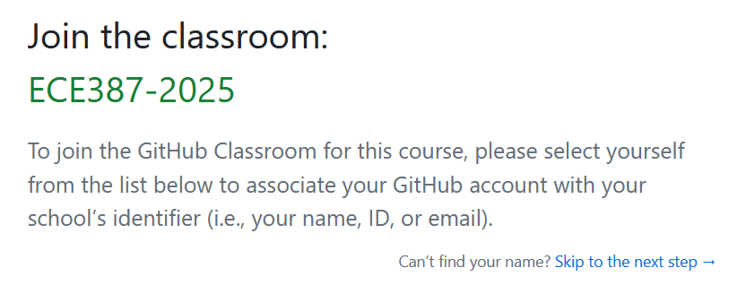
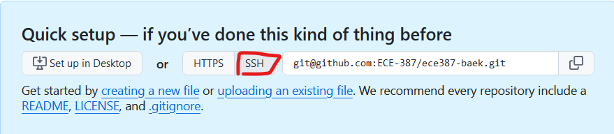
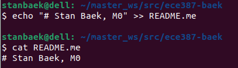
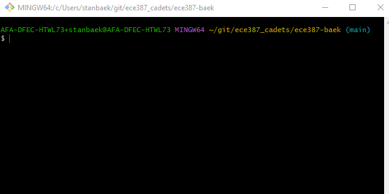
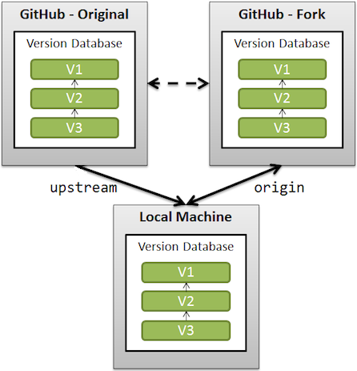

🔧 Git Repo Setup#
Purpose#
Setup GIT repositories and access on the Master.
Note
Don’t worry if it doesn’t work right. If everything did, you’d be out of a job.
Create a Repository within the GitHub Classroom#
If you don’t already have a GitHub account, create one. It’s best if your username is something identifiable (e.g.,
stanbaek).Once your account is ready, go to the ECE387 Classroom.
Your afacademy email address has been preloaded to make joining easy. While I prefer your school email address, you may use another email if desired. For this, click
Skip to the next step:
Select
Accept this assignment.Navigate to your repository and note the repository URL. Save this link—it’s the easiest way to check if your repository is updated.
Go to
Settingsand change your repository name toece387-lastname(e.g.,ece387-baek).Important
Please name your repository as
ece387-lastname(all lowercase). This makes it easier for instructors to locate your repository.
{kind=link}
Set Up GitHub SSH Key on Master#
This section assumes you already have a GitHub account.
Create an SSH key for your GitHub account by running the following command. Use the same email as your GitHub login:
$ cd $ ssh-keygen -t ed25519 -C "your_email@email.com"
When prompted to specify a file path, press
Enterto accept the default location (~/.ssh/id_ed25519).Start the ssh-agent in the background and add your SSH private key:
$ eval "$(ssh-agent -s)" $ ssh-add ~/.ssh/id_ed25519
Open the public key using your favorite terminal-based text editor. This step is easier via an SSH connection from a GUI-based desktop machine, as it allows you to copy the public key to your GitHub account:
$ nano ~/.ssh/id_ed25519.pub
Copy the entire contents of the file. Maximize the window to ensure you don’t miss anything, including the GitHub email.
Open a web browser and log in to your GitHub account.
In the top-right corner of any page, click your profile photo, then select Settings:

In the settings sidebar, click SSH and GPG keys:

Click New SSH key:

In the
Titlefield, provide a descriptive label for the key, such asmaster0.Paste the copied key (from the
.pubfile) into theKeyfield.Click Add SSH key to save it.
Clone Repository to Your Master#
On the Master, open your GitHub repository and copy the repository address using the SSH mode:

Open a terminal and create a workspace source folder:
$ mkdir -p ~/master_ws/src/ $ cd ~/master_ws/src
Clone your repository:
$ git clone git@github.com:ECE387/ece387_lastname.git
Update your Git email address and name:
$ git config user.email "you@example.com" $ git config user.name "FirstName LastName"
Move into your repository you just cloned:
$ cd ece387-lastname
Use the
touchcommand to create an empty file calledCOLCON_IGNORE. This file ensures that this directory will be ignored when compiling ROS packages.Run the following command to append your full name and section to a file named
README.md. Since the file does not exist, it will be created automatically:$ echo "# Your full name, Section" >> README.md
Verify that the file was created correctly by running:
$ cat README.md
If the file was created successfully, you should see output similar to the following:

Commit and push your changes to your GitHub repository:
$ git add -A $ git commit -m"initial commit" $ git push
{kind=link}
{kind=link}
Setup Upstream Repository#
Open a Terminal and navigate to your local repository, such as
$ cd ~/master_ws/src/ece387_lastname
Ensure your local repository is up to date with the remote GitHub repository by running
$ git pull
Verify that all your local changes have been committed and pushed to the remote GitHub repository by running
$ git status
If your repository is clean, you should see the following message:
On branch main No commits yet nothing to commit (create/copy files and use "git add" to track)
If you see uncommitted changes, make sure to commit and push them to the remote repository before proceeding.
Check your current remote repositories by typing
git remote -v
You should see two lines showing that
originpoints to your remote repository on GitHub for both fetching and pushing.Add the instructor’s repository as additional remote source by running
$ git remote add upstream https://github.com/ECE-387/labs.git $ git config pull.rebase true
Verify that the upstream repository has been added successfully by typing
git remote -v
You should now see two additional lines indicating
upstreamis the original repository you forked from.
If the instructor updates the code, you will be notified. To get the latest updates from the upstream repository, run
git pull upstream main
By default, when you push or pull your code,
originwill be used, which points to your own GitHub repository.
Image is sourced from Stack Overflow
{kind=link}
{kind=link}
Create a Team Repository within GitHub Classroom#
Important
Only one person per group should complete these steps.
Visit the GitHub Classroom Assignment.
Click
Create teamand selectAccept this assignment.Navigate to your repository and go to
Settings. Change your repository name toece387-lastname_lastname(e.g.,ece387-baek_pirate).Important
Please name your repository as
ece387-lastname_lastname(all lowercase). This makes it easier for instructors to locate your repository.Go to
Settings>Collaborators and teams>Manage access.Invite your partners by entering their GitHub usernames.
If you are using a different computer from the previous labs, go to this section to set up a new SSH key for the remote GitHub repository.
Clone your repository. Ensure that the name of your local repository is
ece387_wsby running:$ git clone git@github.com:ECE387/ece387_lastname_lastname.git ~/master_ws/src/ece387_ws